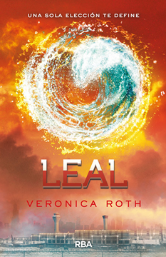

Leal
Sinopsis
Para Tris Prior, la sociedad basada en facciones que conocía y en la que creía fue destruida por la corrupción del poder, la codicia, la pérdida y la violencia. Así que cuando tiene la oportunidad de ver y experimentar el mundo más allá de las paredes de su distópica Chicago, está lista para eso. Tal vez, ella y Tobias encuentren una vida que es mucho más fácil y simple, libre de dolores, mentiras y traiciones. Pero la nueva realidad de Tris es aún más alarmante que la que había dejado atrás. Antiguos descubrimientos se vuelven rápidamente sin sentido. Nuevas verdades cambian a aquellos a quienes ama. Y una vez más, Tris debe luchar para comprender las complejidades de la naturaleza humana -y de sí misma- mientras se enfrenta a decisiones imposibles sobre el coraje, la lealtad, el sacrificio y el amor.
Reseña
Bueno acabo de terminar de leerlo al final ha resultado ser un libro que he disfrutado de principio a fin, un libro de revelaciones con un final que no deja indiferente a nadie y que ha gustado. Es un final que en mi opinion se merecia esta historia y que pese a su sabor agridulce cierra por todo lo alto una distopía que comenzó con buen pie y que tuvo un descenlace bastante bueno con Leal.
Ahora los personajes que debo decir que es algo que también me ha gustado de este libro es el cambio de narrador. En los anteriores sólo conocíamos lo que ocurría a través de los ojos de Tris, y ahora esa carga se reparte entre los dos, entre Tobias y ella, lo que permite conocer la perspectiva de ambos en cuanto a una misma situación, lo que piensa cada uno respecto de las decisiones del otro, los sentimientos mutuos, cómo los reflejan, cómo callan verdades y emociones... Es una buena forma de conocerlos mejor a ambos no sólo de cara a sus personalidades como líderes de una rebelión, sino también como una pareja que trata de sobrellevar la situación y los sentimientos en un mundo que no les deja ser felices juntos y que siempre encuentra razones para separarlos o ponerles en bandos distintos.
En resumen Leal' es el desenlace perfecto para esta trilogía. Su final a mi me gusto. Un libro que me ha enganchado desde el primer momento por todas revelaciones que salen a la luz y por cómo nuestros protagonistas se ensartan en la última y crucial revuelta que hará que los humanos puedan volver a vivir como se merecen, sin limitaciones de ningún tipo y sin estándares preestablecidos por unos pocos que quieren el control absoluto. Veronica Roth invita a la reflexión con los hechos finales del libro y nos deja con unos protagonistas valientes y decididos, dispuestos a todo para poder vivir libremente.
4/5